Gantry build guide · CubXL
CubXL Gantry
Assemble the CubXL from the Genmitsu PROVerXL 4030 V2 CNC Router Kit. Some work is completed before shipping; use this guide as the assembly source of truth and consult the Genmitsu manual only at the referenced steps.
Source: CubXL - Gantry User Manual, Rev. 2.
Parts
The source lists 32 items:
- Genmitsu PROVerXL 4030 V2 CNC Router Kit User Manual
- Genmitsu Power Supply
- Power Cord
- USB A-to-B Cable
- X-Axis Motor
- M4x12 Socket Head Cap Screw (4)
- M5x14 Flat Head Cap Screw (8)
- M4x6 Flat Head Cap Screw (8)
- X-Axis Module with XZ Axis Module/Z-Axis Motor
- X/Y-Axis Drag Chain/Cables
- Y-Axis Drag Chain Bracket A with two M5x12 screws
- Y-Axis Drag Chain Bracket B with two M4x6 screws
- XY Axis Base Module
- CUBXL ASMI Wellplate Mount
- Heater Plate Holder
- Vernier Go Direct Mount (front/back)
- Para-Dox Well Plate Vial Cover
- Calibration Block Base
- Calibration Block
- Vernier Go Direct Force and Acceleration Sensor/Cable
- 5 mm Ball Indenter (3)
- 3 mm Ball Indenter (3)
- 18-8 SS Socket Head Screw, M4, 16 mm (6)
- 18-8 SS Button Head Screw, M5, 15 mm (8)
- Zinc Plated Steel Hex Nut, M5 (8)
- Raspberry Pi 5
- Raspberry Pi Power Adapter
- Hexagonal Driver for Lead Screw
- 2 mm Allen Wrench
- 2.5 mm Allen Wrench
- 3 mm Allen Wrench
- 4 mm Allen Wrench
Each item has quantity one unless a quantity is shown in parentheses. See the illustrated source inventory below for part photographs.
Assembly steps
- Confirm Y-axis roller module position. Refer to Step 1. The modules should already be behind the green tape and butted against the mechanical stop, as close to the Y-axis motors as possible.
- Install the X-axis module. Refer to Step 2, then remove the green tape.
- Skip installing the XZ-axis module. It is already installed. It does not include the spindle; ignore spindle references in the Genmitsu manual.
- Install the lead-screw coupler and X-axis motor. Refer to Step 4. The coupler is already installed on the motor; install the motor in the proper orientation.
- Install the Y-axis drag-chain brackets. Refer to Step 5.
- Install the Y-axis drag chain. Refer to Step 6. The X/Y drag chain and wiring arrive assembled. Install the end with the twelve screw-lock cables on bracket A, observing the source figures for orientation.
- Skip installing the X-axis drag-chain bracket. Brackets A/B are already installed on the X-axis module.
- Install the X-axis drag-chain cable. Refer to Step 8 and install the free end of the X/Y drag chain on X-axis drag-chain bracket B.
- Finish wiring. Follow the Genmitsu wiring diagrams and disregard spindle motor wiring.
- Connect the Raspberry Pi. Use the source wiring figure as the reference for the Vernier sensor cable, USB A-to-B cable, and Raspberry Pi power adapter.
Mounts
Vernier Go Direct mount
- Gather the Vernier mount, sensor, six M4 x 16 mm socket head screws, two M5 x 15 mm button head screws, two M5 hex nuts, and the 3 mm Allen wrench.
- Place the Vernier sensor in the rectangular opening in the back half of the mount, following the source orientation.
- Place the cover over the assembled sensor and mount.
- Install the six M4 screws above the sensor. Install the two M5 screws below it and the two M5 nuts in the rear hex cavities; tighten until snug and clamping the sensor.
- Screw either a 5 mm or 3 mm ball indenter into the sensor, depending on testing needs.
- Align the six screws with the six holes on the X-axis module and tighten snugly. Plug the sensor cable into the side of the sensor.
Adding mounts to the baseplate
The source says this method applies to the CUBXL ASMI wellplate mount and heater plate holder; the following example uses four screws and four nuts for the ASMI mount. The Hamilton holder uses two screws and two nuts.
- Align the mount’s four holes with holes in the gantry baseplate.
- Place four M5 x 15 mm button head screws through the aligned holes.
- From underneath the baseplate, fasten four M5 hex nuts and tighten until the mount does not move.
CubOS software setup
These steps describe the prepared Raspberry Pi supplied with the source kit. Use your machine’s setup network and hostname; the source’s network name is an example.
- What you need: the assembled machine with Raspberry Pi and power supply, a phone or laptop, and optionally an Ethernet cable.
- Power on: connect power and allow about one minute for the Pi and CubOS operator to boot.
- Connect to the network: for this source example, use the Wi-Fi setup network
CubOS-FEF7with passwordcubsetup, or connect the Pi to a router by Ethernet. For Wi-Fi, browse to192.168.42.1if the setup page does not open automatically; choose your network and connect. Enterprise networks requiring a username are not supported, and client-isolated guest networks may block access. - Open the operator: on the same network, open
http://cub.local:8742, or use the machine IP address. - Connect the hardware: in Workflow, choose the gantry configuration, such as
cub_xl_asmi.yaml, and press Connect. The status dot turns green when the serial link is up. - Continue: proceed with homing, calibration, deck setup, and protocols in the CubOS documentation.
CubXL calibration block guide · Choose another guide
Illustrated source manual
Read the original assembly figures and parts tables below. These pages were retrieved from KABLab on September 22, 2026. Open the source Google Doc for later changes.
View all 12 illustrated pages
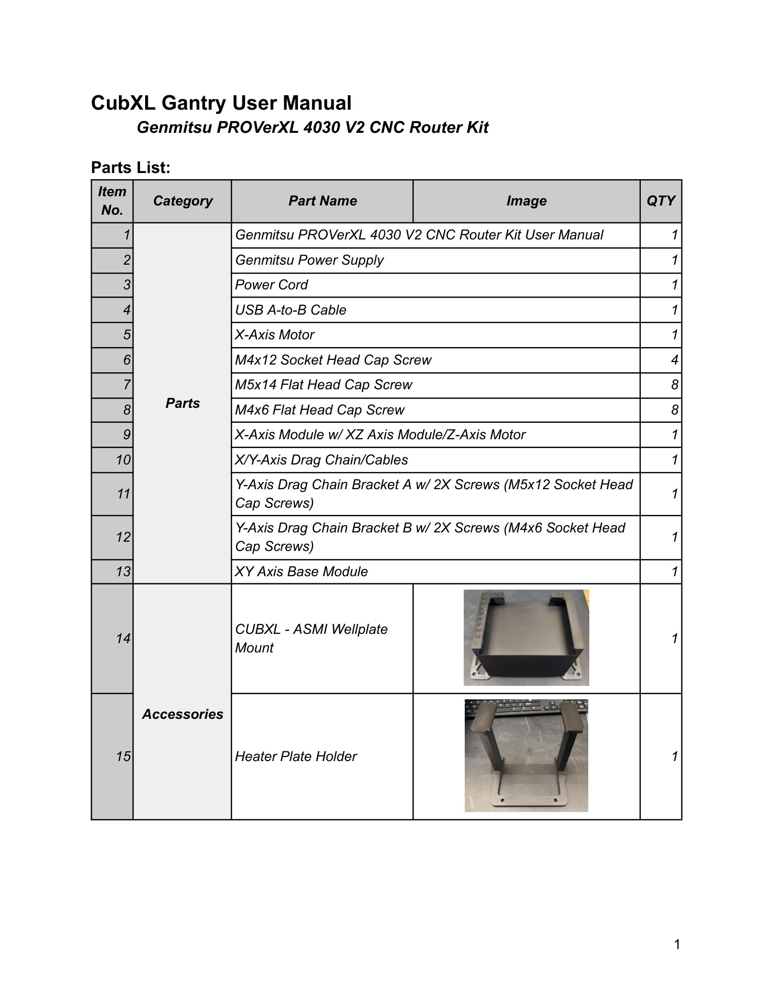
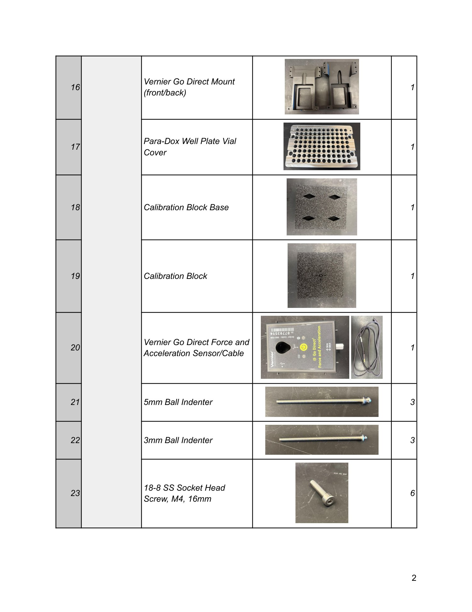
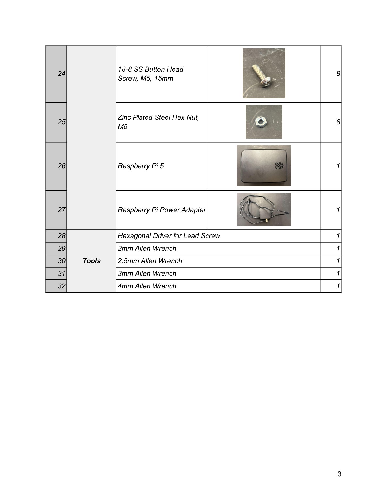
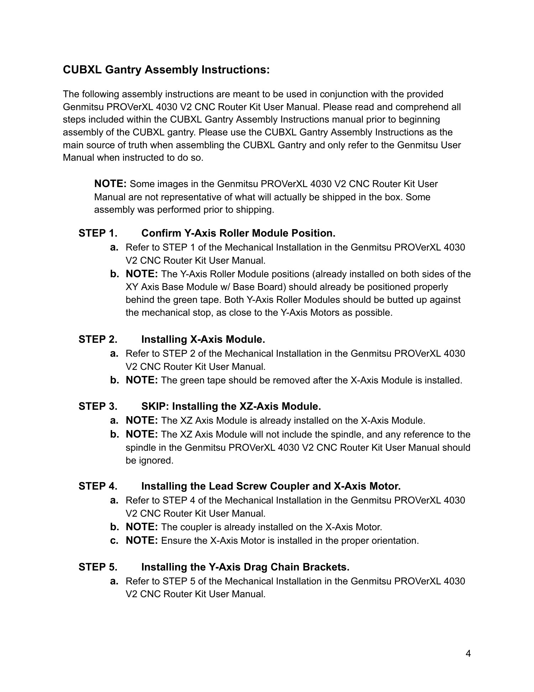
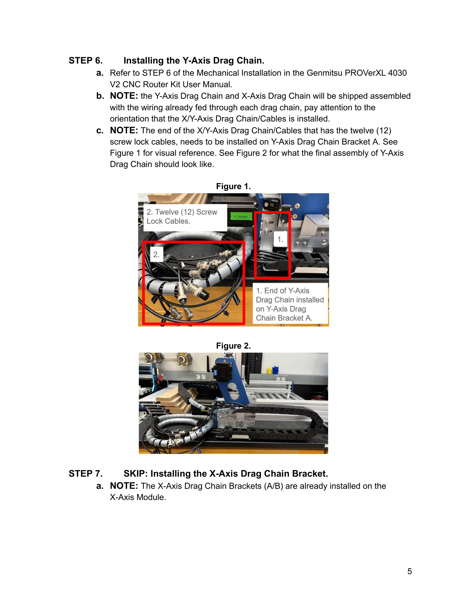
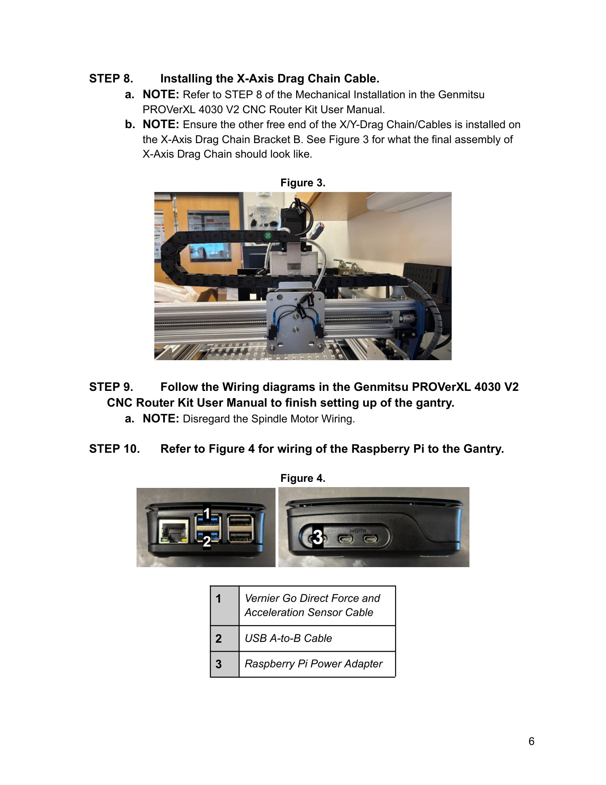
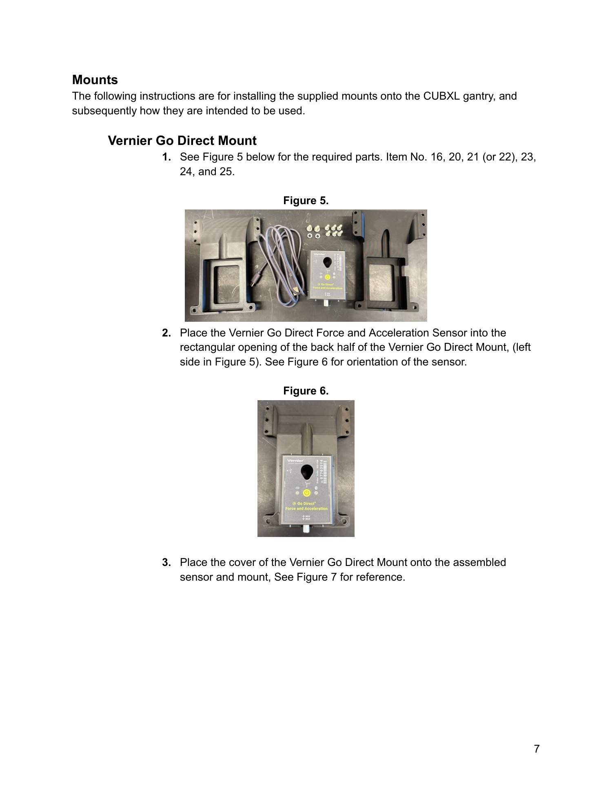
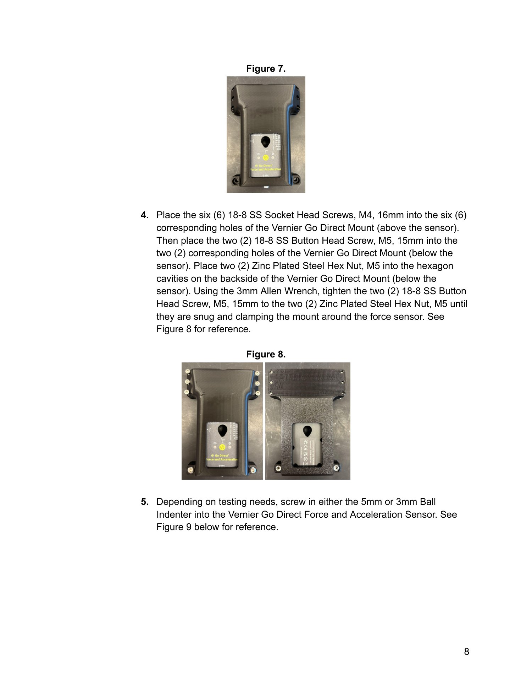
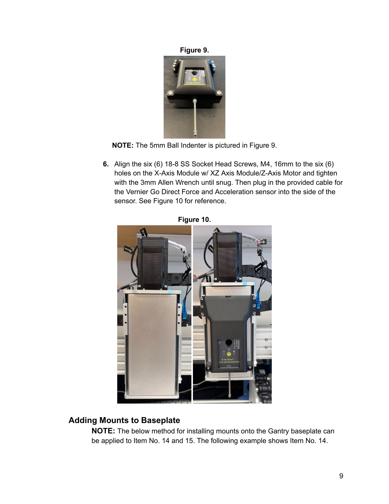
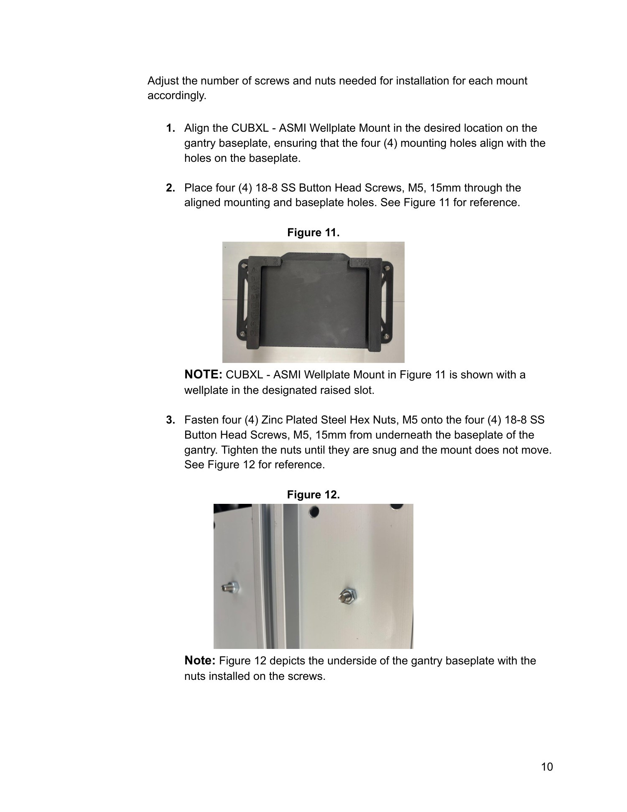
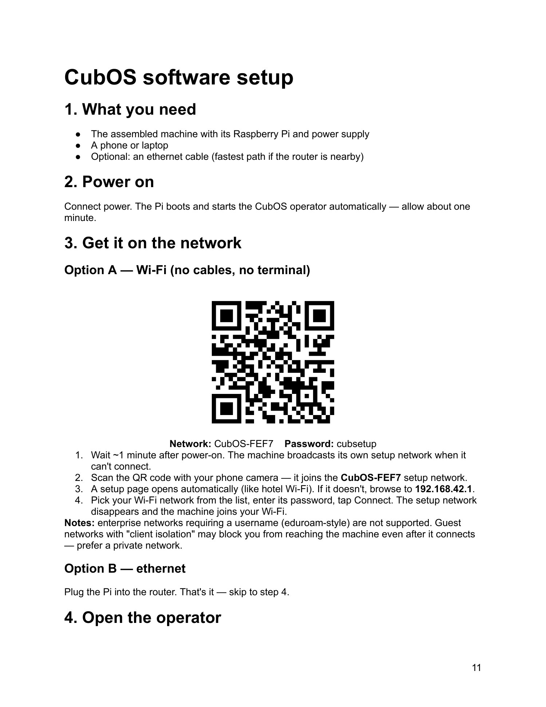
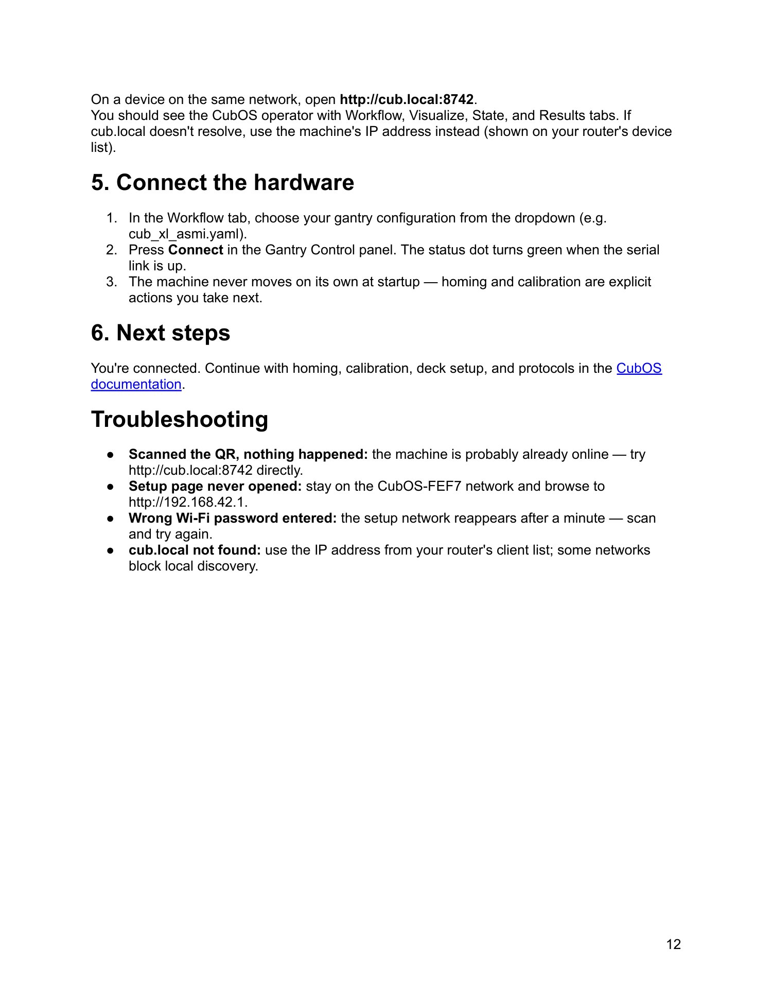